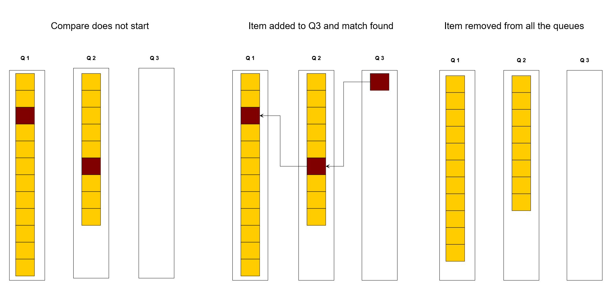
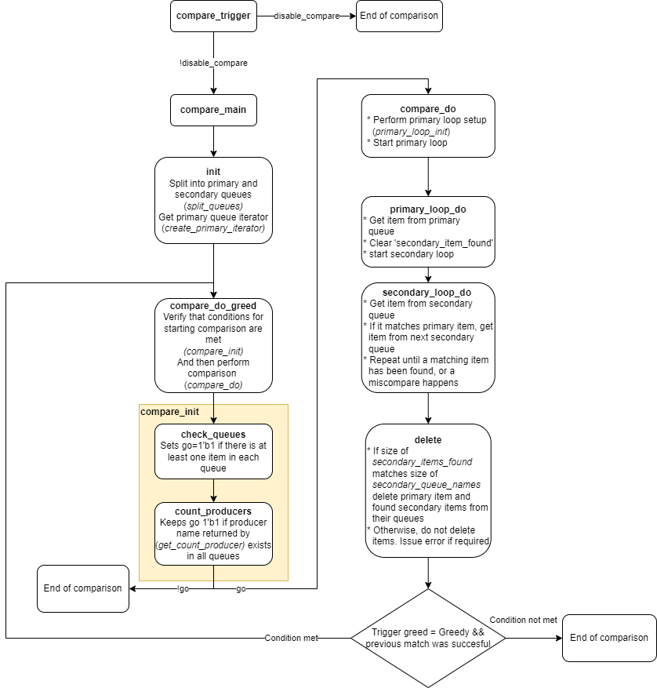

Available comparison algorithms
The compare procedure consists of finding the same element in all queues in the scoreboard. One queue is selected as the primary queue, and an attempt is then made to find the first element from the primary queue in all other queues. Whenever a match is found, these elements are removed from the queues.
The compare mechanism is triggered whenever an element is inserted into a queue, leading to all queues being non-empty (if one or more queues are empty after insertion, there cannot be a match and no comparison is performed). The figure below shows an OOO-compare being performed after an item is inserted into Q3.

The compare can be disabled after the first UVM_ERROR if the cl_syoscb_cfg.disable_compare_after_error configuration knob is set to 1'b1.
A UVM_ERROR is obtained on a number of occasions:
- When using In Order-based comparisons, a UVM_ERROR is issued if the first item in any of the secondary queues does not match the first item in the primary queue.
- When using Out of Order comparison, a UVM_ERROR is only issued if a queue's size reaches the limit set in cl_syoscb_cfg.max_queue_size. Compare errors are not issued, as the OOO comparison, by definition, cannot know whether a matching item may arrive at a later point in time.
- Independently of compare strategy, a UVM_ERROR may be issued if one or more of the queues are non-empty at the end of simulation. This depends on the value of cl_syoscb_cfg.orphans_as_errors
The table below outlines the differences between the available comparison strategies.
| Compare method | Description |
| cl_syoscb_compare_ooo | Elements do not have to be in the same order.
Standard queue: In order to find a match it has to loop through all queue items.
MD5 queue: In order to find a match it only has to check if the hash value is in the associative array. |
| cl_syoscb_compare_io | Elements have to be in the same order. |
| cl_syoscb_compare_io_2hp | Only two queues in scoreboard. Elements have to be in the same order. |
| cl_syoscb_compare_iop | Elements from the same producer have to be in the same order. |
Implementing custom compare algorithms
If you require a custom comparison behaviour which is not covered by the included compare algorithms, a new algorithm can be implemented by extending cl_syoscb_compare_base and implementing the necessary methods labeled with Compare Strategy API.
Included below is a flowchart of the general compare flow. This can be used as a starting point when implementing new compare algorithms.
